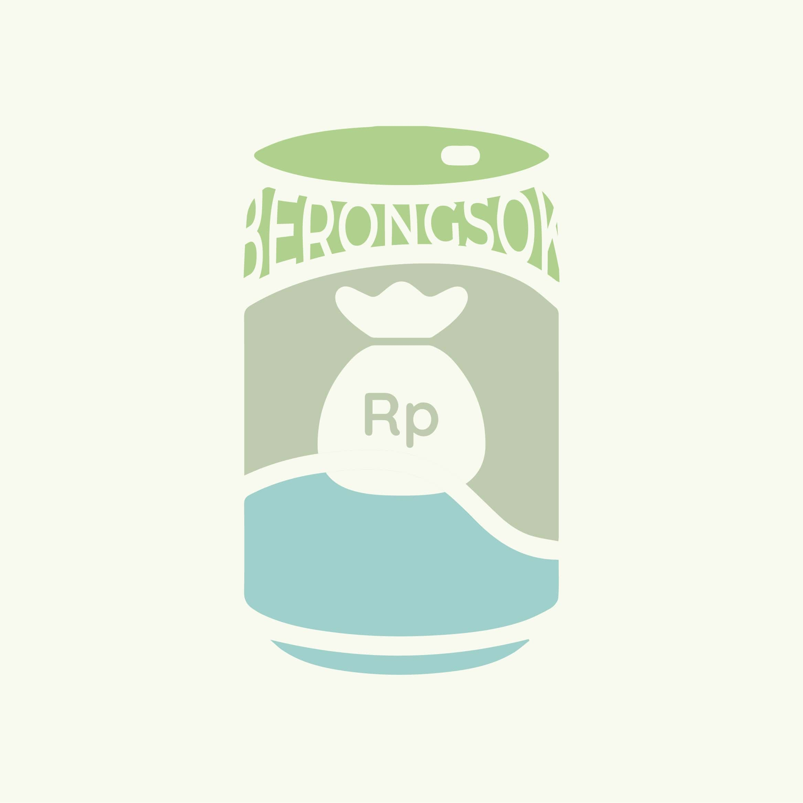
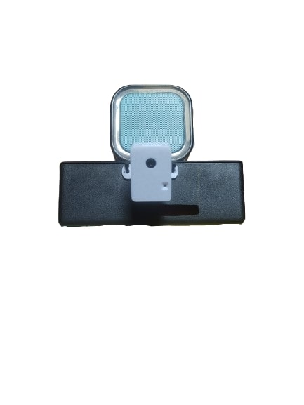
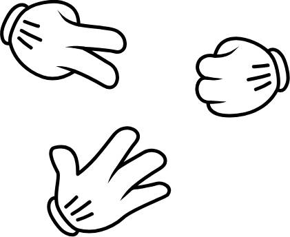
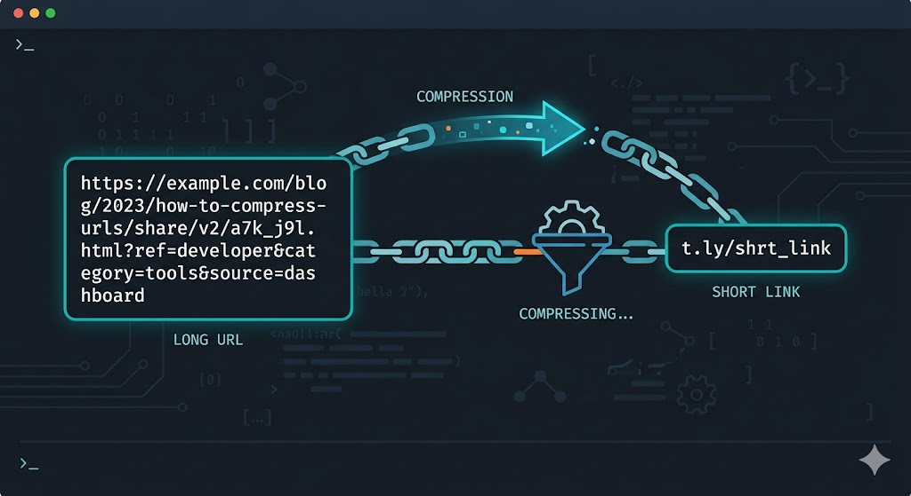
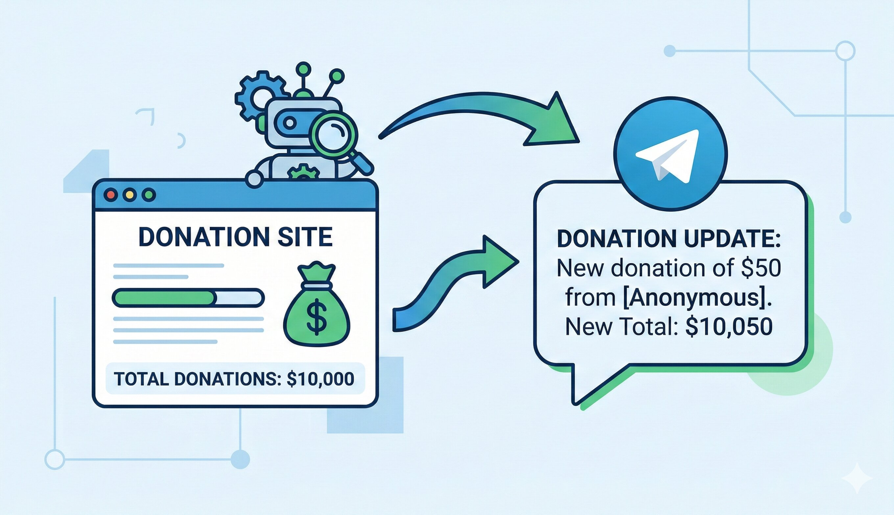

Berongsok is an AI-powered waste classification app designed to
assist Trash Banks in streamlining waste sorting and data
collection processes. This application integrates machine
learning to improve waste management efficiency and supports
sustainable practices in Indonesia.
[Top 50 Best Capstone Project - Bangkit Program 2024]

This project detects smoking activities in real-time using computer vision. The ESP32-CAM streams live video feed to Raspberry Pi 5, where a trained model performs inference to detect smoking actions. When a smoking event is detected, an audio alert is triggered through a connected speaker. All detections are logged and can be monitored in real-time via a web interface.

Built a CNN model to recognize hand gestures in the rock-paper-scissors game, using a dataset of hand images representing the three respective categories: rock, paper, and scissors.

URL shortening API built with Node.js, Express, and PostgreSQL. Generate short links with automatic redirection, making long URLs compact and shareable.

Real-time donation tracker for Kitabisa campaigns with Telegram alert notifications. This tool automatically monitors a Kitabisa fundraising page, detects changes in the total donation amount, and sends instant updates to a Telegram bot perfect for personal tracking, community awareness, or transparency monitoring.
Email: sepsarip1811@gmail.com
LinkedIn: linkedin.com/in/sep-sarip-hidayattuloh
GitHub: github.com/sepsarip